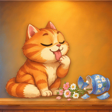

Who Did This?!
Last updated: 23 November 2026
Privacy policy
Short version: the game does not collect, store or share any personal data.
- No account, no sign-in, no name, e-mail or contacts are requested.
- No advertising, no analytics, no tracking and no third-party SDKs.
- No in-app purchases.
- Your progress (stars, fish, upgrades, language and sound settings, and the name you give your cat) is saved only on your own device. It never leaves the device and is removed when you delete the app or clear the browser data.
- The app works offline and makes no network requests while you play.
The browser version is hosted on GitHub Pages. Like any web host, GitHub may log technical data such as IP addresses when the page is loaded; this is governed by the GitHub Privacy Statement and is not accessible to us.
Children. The game is suitable for all ages and collects no information from anyone, including children.
Changes. If this policy ever changes, the new version will be published on this page with a new date.
Contact. Questions about privacy: use the support page.
Polityka prywatności
W skrócie: gra nie zbiera, nie przechowuje i nie udostępnia żadnych danych osobowych.
- Bez konta i logowania; gra nie prosi o imię, e-mail ani kontakty.
- Bez reklam, analityki, śledzenia i zewnętrznych bibliotek.
- Bez zakupów w aplikacji.
- Postępy (gwiazdki, rybki, ulepszenia, język, ustawienia dźwięku oraz imię nadane kotu) są zapisywane wyłącznie na Twoim urządzeniu. Nie opuszczają go i znikają po usunięciu aplikacji albo wyczyszczeniu danych przeglądarki.
- Aplikacja działa offline i podczas rozgrywki nie łączy się z siecią.
Wersja przeglądarkowa jest hostowana na GitHub Pages. Jak każdy serwer, GitHub może zapisywać dane techniczne, na przykład adresy IP, podczas ładowania strony; reguluje to polityka prywatności GitHuba, a my nie mamy do tych danych dostępu.
Dzieci. Gra jest odpowiednia dla każdego wieku i nie zbiera informacji od nikogo, także od dzieci.
Zmiany. Jeśli polityka się zmieni, nowa wersja pojawi się na tej stronie z nową datą.
Kontakt. Pytania o prywatność: przez stronę wsparcia.